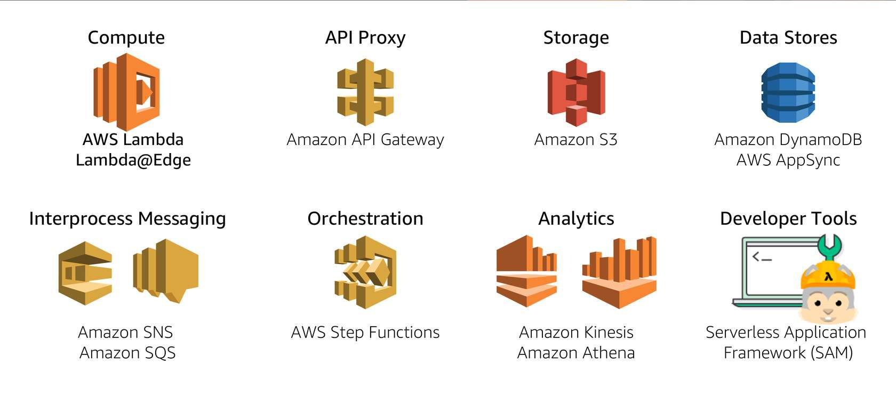
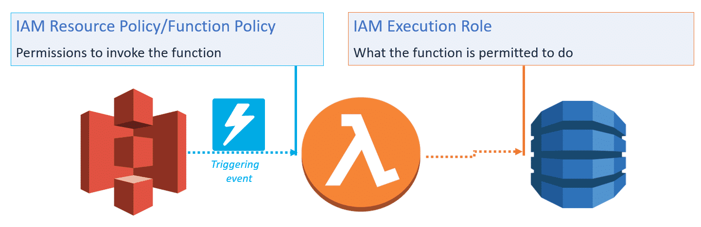
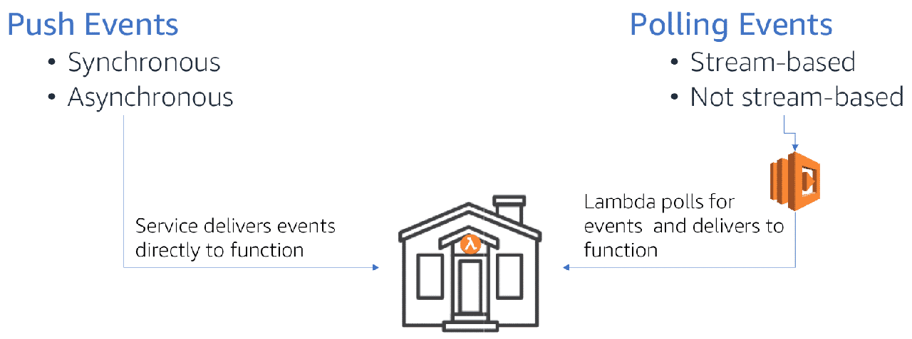
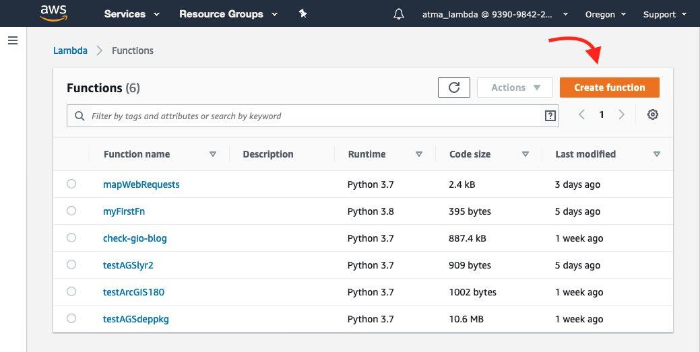
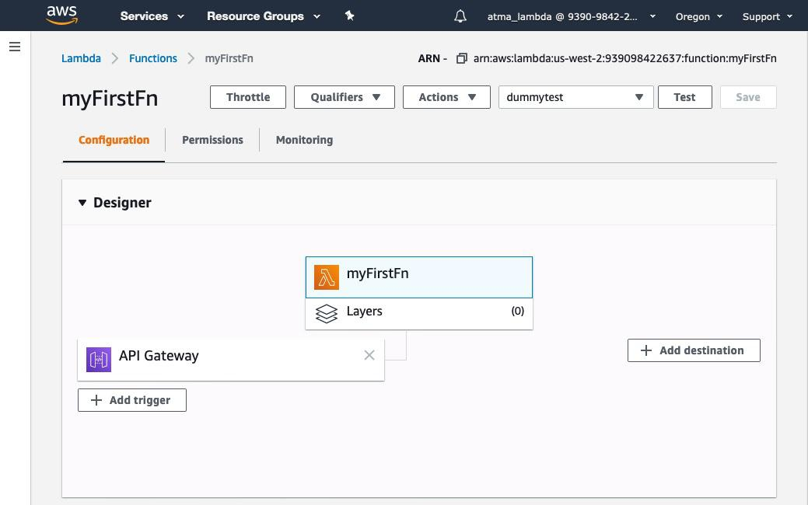
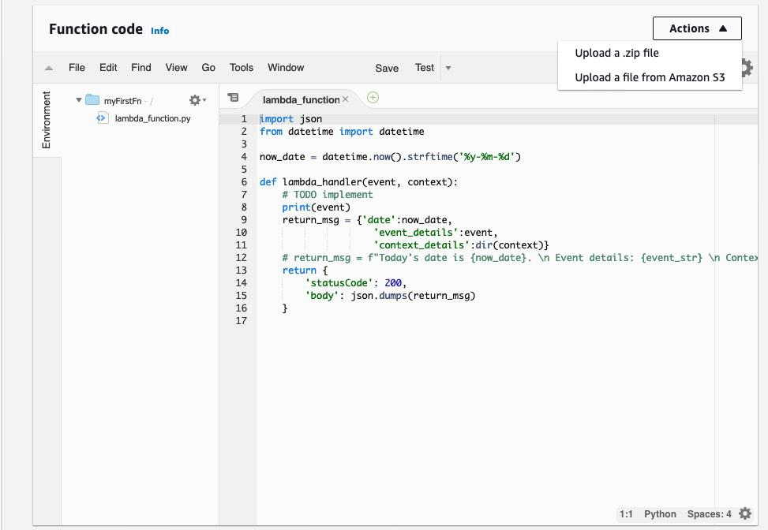
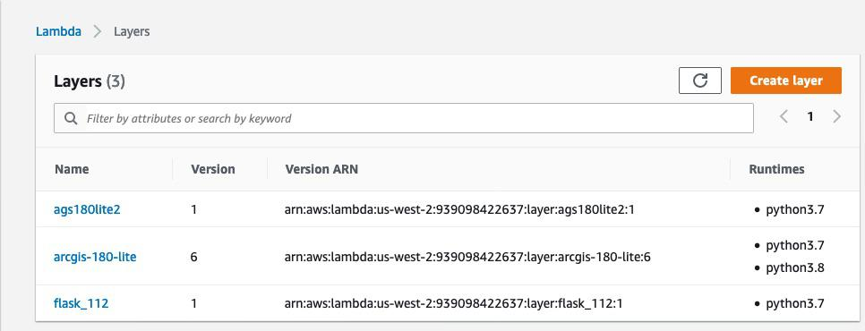

AWS Lambda Functions - a Quick Start guide
Lambda functions from AWS sit at the heart of its serverless compute services. It lets you run code without you as a developer having to procure, host, maintain and secure servers on the cloud. All you need to worry about is just the code and the business logic. This guide will help you get started creating simple lambda functions.
AWS promotes several services under its serverless platform as shown below: 
To create a lambda function, you need not learn a new language. You can code in one of many supported languages, including Python, Java, Node.JS etc. Your code can perform traditional compute as well as use AWS libraries to talk to the rest of AWS platform services. Scaling (compute scaling, network scaling, IO throughput scaling) happens automatically based on demand. System logs are written to AWS Cloudwatch service. As with any serverless compute service on AWS, you don’t pay for idle time. Before we create a new function, we need to clear some concepts:
Concepts¶
Lambda function permissions¶
There are two types of permissions - a. what is allowed to invoke the function, and b. what the function is allowed to do (or talk to).

Lambda event sources¶
Events are the triggers that cause a lambda function to run. For instance, a file being stored in S3, a cloud watch event etc. are event sources. Broadly, these triggers can be classified into two types: a. Push events (where the source is external to the fn) and b. Poll events (where the lambda will poll a service on a set interval).

Push events can be synchronous or asynchronous. Sync events expect an immediate response, while async can do not. Async are suited for batch processing.
Lifecycle of a lambda function¶
From the AWS training site: 1. When a function is first invoked, an execution environment is launched and bootstrapped. Once the environment is bootstrapped, your function code executes. Then, Lambda freezes the execution environment, expecting additional invocations.
-
If another invocation request for the function is made while the environment is in this state, that request goes through a warm start. With a warm start, the available frozen container is thawed and immediately begins code execution without going through the bootstrap process.
-
This thaw and freeze cycle continues as long as requests continue to come in consistently. But if the environment becomes idle for too long, the execution environment is recycled.
-
A subsequent request starts the lifecycle over, requiring the environment to be launched and bootstrapped. This is a cold start.

Architecture of a lambda function¶
This is a simple lambda function that returns the current date:
import json from datetime import datetime now_date = datetime.now().strftime('%y-%m-%d') def lambda_handler(event, context): # TODO implement return { 'statusCode': 200, 'body': json.dumps('Hello from Lambda! Now the time is: ' + now_date) }
The filename is lambda_function.py and the invocation is to lambda_function.lambda_handler.
At the core of a lambda function is the handler(event, context) method. The event object can either be AWS generated obj (when AWS services invoke) or custom user-defined obj. The context obj provides information about the current execution, such as remaining time etc.
You author lambda functions in 3 ways:
- use the Lambda Management Console web app, which is based off the Cloud9 web IDE service.
- Upload code package after you author it using your IDE of choice
- Upload code package to a S3 bucket and give Lambda the url to the code.
Uploading to S3 bucket might be suitable if your package is >10 MB in size, or if the code is part of a CICD pipeline.
Principles of a good lambda function¶
AWS Lambda developer guide has more information on best practices. Below is the gist:
- Functions in your code should be modular, testable and stateless. Separate out business logic from the handler function. If you can identify two separate tasks in your function, break them down and create two separate functions if that’s possible. This makes it modular, just like a microservice.
- To benefit from warm start, store data locally in
/tmpdirectory. But don’t assume it is always available. - To write data permanently, use DynamoDB service which is serverless and has millisecond latency.
- To take advantage of CloudWatch, use Python’s
loggingmodule. Simple print statements also would do and they are captured in CloudWatch. - To pass sensitive information, use environment variables.
- While recursion might be elegant in regular programming, it can lead to uncontrolled behavior in lambda functions. So, avoid them.
Lambda configurations¶
Lambda functions are billed for memory and duration of execution. The default memory is 128 MB and you can request up to 2 GB. When you request for a larger size, you get proportionally higher compute power and also a higher cost rate. Services are billed for memory + execution duration (the max of duration is set as timeout limit). Default timeout is 3 sec and the current max is 15 min. Thus, you need to optimize for cost of higher memory and cost of exec duration. Sometimes, a higher memory might end up costing less, because it finishes in shorter duration. This comes down to profiling your function and understanding how you can speed it up.
Authoring lambda functions¶
To create a lambda function, create an AWS account (which needs to be different from your Amazon shopping account). If you are a new user, you get 12 months of free service in addition to certain services that have an always free tier. Checkout https://aws.amazon.com/lambda/pricing/ to understand pricing. In my experience, they first 50,000 executions are practically free, so it is safe to experiment with.
Steps:
-
From AWS console, search for and click on ‘Lambda’. This opens the Lambda console. From the menu on the left, click on ‘Function’ which brings you to the layout shown below: 
-
Click on ‘Create Function’. You can choose from one of 3 options, for now, choose ‘Author from scratch’. Give a name to the function
myFirstFnor such. Choose runtime aspython3.7or similar. Choose a permission, the default setting will do for now. -
In the Lambda console, you have different sections. The ‘Designer’ lets you choose layers which are Python library layers, more of this later. For now you can choose a Trigger as
API gateway. Triggers define what will invoke your function. I don’t have a destination in this example, but examples are calling another ‘lambda’ or some other AWS service. There aren’t as many destinations as there are for triggers.  If you click on the ‘API Gateway’, you get a URL that is public facing. AWS has set up a web server, a server framework, exposed it to the internet, generated a route that is specific for this function and given you in that URL. -
The Function code section gives you the Cloud9 based IDE. It feels similar to JupyterLab interface and lets you develop Python code. By convention, the lambda service looks for a file by name
lambda_function.pyand a function calledlambda_handler(event, context)within it for invocation. You can follow the convention, which the console stubs out for you, or change this in the Basic settings section. Thereturnstatement should return an object that is web friendly - such as JSON or HTML. Anyprintorloggingmodule statements are captured in CloudWatch logs and linked for you for debugging.  -
Hit Save and Test to ensure it runs as you expect. This is it. You have created the ‘hello-world’ of lambda functions and its running.
Lambda - advanced concepts¶
Runtime, Handler, Memory, Timeouts¶
Hit the ‘Edit’ button on ‘Basic settings’ to customize as shown below:

The ‘Handler’ part allows you to specify your main.py file and the function within to invoke. This is helpful if you deviate from the lambda convention of what you call the handler function.
Lambda layers¶
The Amazon Machine Image for python3.7 Lambda comes with bare Python and boto library. Nothing else. Any library that your app needs (such as requests or flask) has to be bundled in your code. If you have more than a few functions that have similar dependency stack, you are essentially repeating the same packages in each function. Besides, the dependency package for my apps can easily exceed the 10MB upload limit and the lambda console would not let me live edit my files using the Cloud9 console. A solution to all of this is to create a lambda layer which contains all your dependencies.
Once you publish a layer, you can link to it from your function and just like that, import your dependencies. Lambda service will take care of laying it and wiring up your Python path. To create a layer, from the lambda menu on the left, choose ‘Layers’ to enter the layers console.

Click on ‘Create Layer’, to give it a name, upload your files as a .zip file or from a S3 bucket. Choose runtimes. You can choose more than one.
Building a deployment package for a layer¶
The most important thing to remember here is to build your deployment package in an environment that is identical to the lambda service itself. This implies, building the package in a Linux OS (better if you get the same Docker image lambda uses). After several attempts, using pipenv instead of conda and pip3 to install packages worked best for me.
pipenv allows you to create a folder as your deployment environment. Then, pip3 install <pkg name> --target . allows you to install the packages in the current directory. Go ahead and install all dependencies. Then bundle them up as a .zip file and you got yourself a deployment package.
Sharing layers¶
Per the AWS doc, you can share a layer you create with other users. All they need is the arn number. However only those functions deployed in your AWS Region can use the layer. If you want it universally available, you may have to publish it in all regions.
Just like a typical software library, you can version a layer. This makes it great to keep layers updated as newer versions are released.
Conclusion¶
This was a quickstart guide teaching what lambda functions are and how to get started with them. Next up, Azure functions.